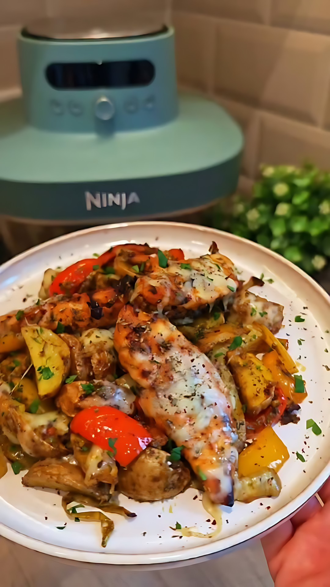

Anzeige
 AnzeigeNinja CRISPi PRO XL · MoosgrünDie Glas-Heißluftfritteuse aus dem Video.Produkt ansehen ↗
AnzeigeNinja CRISPi PRO XL · MoosgrünDie Glas-Heißluftfritteuse aus dem Video.Produkt ansehen ↗
Leckere Pesto-Kartoffeln mit Hähnchen und Käse aus meiner Ninja CrispiPro
Leckere Pesto-Kartoffeln mit Hähnchen und Käse aus meiner Ninja CrispiPro
- 8 Zutaten
- 8 Schritte
Zur Zubereitung Video ansehen ↗
Zutaten
AnzeigeNinja CRISPi PRO XL · MoosgrünDie Glas-Heißluftfritteuse aus dem Video.Produkt ansehen ↗Als Amazon-Partner verdiene ich an qualifizierten Verkäufen.
Zubereitung
- Mini-Kartoffeln halbieren, Paprika und Zwiebel klein schneiden.
- Alles mit grünem Pesto, Olivenöl und Gewürzen vermischen.
- Im großen Behälter der Ninja CrispiPro bei 180 °C ca. 22–28 Minuten garen.
- Die marinierten Hähnchen-Mini-Steaks separat im kleinen Behälter bei 180 °C ca. 10 Minuten garen.
- Anschließend das Hähnchen auf den Pesto-Kartoffeln verteilen, geriebenen Käse darübergeben und bei 160 °C für 3–5 Minuten überbacken.
- So einfach, so lecker und perfekt für die ganze Familie!
- BLACK FRIDAY IST DA!
- Hol dir deine Ninja CrispiPro bei Amazon über meinen Link in der Bio – solange das Angebot läuft!